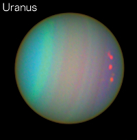

Our Solar System
Our Solar System - 8 Planets, 1 Earth

The planet closest to the sun. Mercury is hot and heavy.
Click on Mercury to Learn More.

Venus is considered to be Earth's sister planet, however Venus is very different than Earth.
Click on Venus to Learn More.

Earth, our home. Earth is the only life bearing planet that we know of.
Click on Earth to Learn More.

Mars is the 4th planet from the Sun. Mars is very earth like and home to multiple NASA Rovers.
Click on Mars to Learn More.

The largest of the Gas Giants. Jupiter is the largest planet in our solar system.
Click on Jupiter to Learn More.

Known for it's rings Saturn is one of the easiest planets to identify.
Click on Saturn to Learn More.
- 
The second Gas Giant with rings, Uranus.
Click on Uranus to Learn More.

The planet furthest from our Sun, Neptune is large and cold.
Click on Neptune to Learn More.